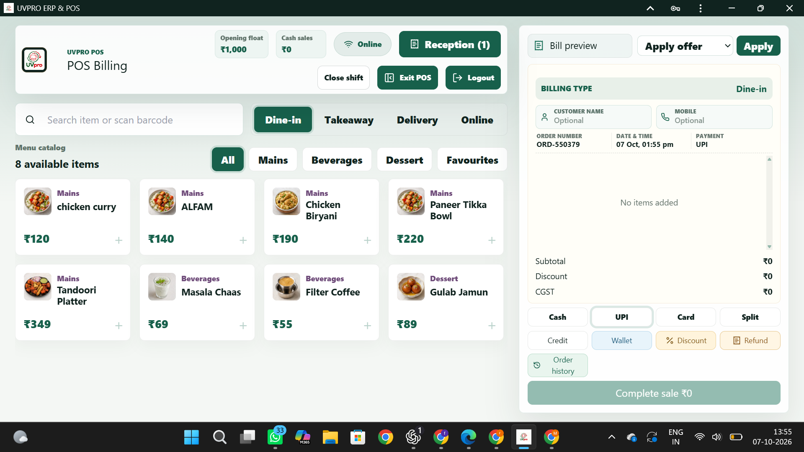

Labels at speed
Support shelf, product, and receipt labels across busy stores and distribution points.

Printers & traceability
Reliable barcode, label, receipt, and RFID printing for retail shelves, warehouses, logistics, and connected supply chains.
Visit TSC IndiaPair TSC printing hardware with the right workflows to keep products, parcels, and inventory visible from receiving to checkout.
Support shelf, product, and receipt labels across busy stores and distribution points.
Make movement easier to track with consistent barcode and RFID-ready output.
Vestano India LLP helps connect equipment choices to practical operating needs.